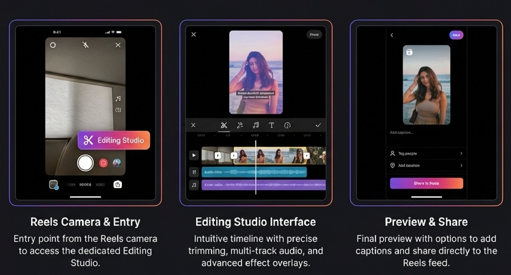
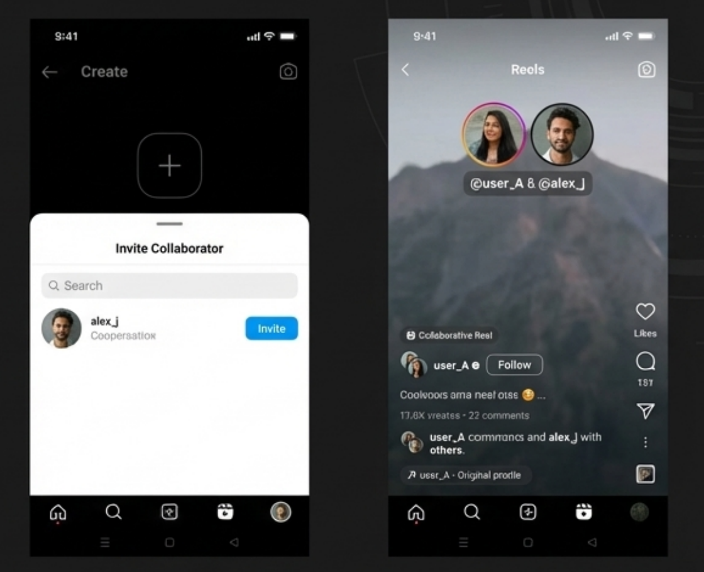

Improving the Reels Experience on Instagram
A product teardown of Instagram Reels: where discovery breaks down for viewers and creators, which problems to fix first, and two features that could lift watch time and creator follows.
View case study →Product overview
Launched by Instagram in 2020, Reels is a short-form video feature designed to compete with platforms like TikTok. It lets users create and discover entertaining videos up to 90 seconds long.
Reels sits directly inside the Instagram app, so it draws on a massive existing user base. It offers audio, AR effects and editing tools, a dedicated discovery feed, and monetization for creators, which makes it central to Instagram's engagement and growth strategy.
Competitors
Business model: advertising & the creator economy
Monetization comes mainly from targeted video ads in the Reels feed, plus tools that let creators earn through brand partnerships and direct monetization.
Users of Reels
- Content creators
- Viewers & followers
- Brands & businesses
- Influencers & marketers
- Artists & musicians
- Educators & niche experts
Key features
- Advanced editing tools
- Extensive audio library
- AR effects & filters
- Remix and Duet
- Templates for easy creation
- Sharing to Feed/Stories
- Interactive stickers (polls, Q&A)
Additional revenue
- Creator subscriptions
- Shopping tags & e-commerce
- Gifting and tipping
- Branded content & partnerships
- Affiliate marketing links
- Creator marketplace
User persona
Content discovery fatigue
She keeps seeing the same trends and sounds, and wants more variety that truly fits her niche interests.
Pressure to perform
She feels she must constantly post high-engagement content, and the unpredictable algorithm is discouraging when work she's proud of underperforms.
Negative social comparison
Endless scrolling through curated, successful-looking content leaves her feeling inadequate and questioning her own progress.
Creative expression & community
She wants to share her passion for sustainable fashion and connect with a like-minded community.
Skill development
She wants to improve her editing and storytelling, and looks for new features, effects and tutorials.
Meaningful engagement
Beyond likes, she wants real conversations and feedback in her comments to build a loyal following.
She also follows other creators for inspiration on studies, hobbies and personal style, treating Reels as a visual discovery engine.
Problem
The problem to solve is to improve Reels content discovery so that engagement rises, with a focus on watch time and creator follows. Share frequency is the third anchor.
To move any of these metrics, users have to discover more relevant content or connect with more creators.
Stakeholders
Better discovery means showing people more relevant content and helping them find the creators who fit them.
User journey
| Discovery | Consumption | Consideration | Creation | Sharing | |
|---|---|---|---|---|---|
| Stage | User opens Instagram | User starts watching Reels | User gets an idea | User records & edits a Reel | User posts the Reel |
| Goal | To be entertained | Find interesting content | To create something similar | To create an engaging Reel | To get views and likes |
| Touchpoint | Opens the app | Navigates to Reels tab | Saves audio / effect | Uses creation tools | Writes caption, clicks share |
| Emotion | 🙂 | 😄 | 🤩 | 🤔 | 🤞 |
| Pain point | Irrelevant content | Repetitive trends | Hard to find trending audio | Complex editing tools | Anxiety about performance |
Prioritization
I scored five problems with RICE (Reach × Impact × Confidence ÷ Effort). The two highest scores, 90 and 84, were picked for immediate work.
| Problem / opportunity | Reach | Impact | Confidence | Effort | Score |
|---|---|---|---|---|---|
| Lack of clear categorization for Reels content (no tags or topic filters) | 8 | 8 | 75% | 5 | 90 |
| Inefficient discovery of niche creators; algorithmic suggestions are too broad | 9 | 7 | 80% | 6 | 84 |
| Limited creative tools compared to competitors (advanced editing, templates) | 7 | 6 | 90% | 4 | 75 |
| Difficulty tracking engagement metrics for individual Reels over time | 5 | 8 | 85% | 7 | 60 |
| Inconsistent video quality and playback across devices | 6 | 5 | 70% | 8 | 52 |
Solution 1: Enhanced editing tools
Give creators pro-level editing directly inside the Reels camera, which reduces friction and raises content quality. Users can trim, splice, add advanced effects and manage multi-track audio before publishing.
- Reels camera
- Select media & record
- Open Editing Studio
- Timeline editing
- Effects & audio mix
- Preview & adjust
- Captions & share

Creators told me, in effect, that they want to make something good without learning a whole editing suite.
Solution 2: Collaborative Reels
Several users contribute clips to one shared Reel. This answers the need for more interactive, co-creative formats: invite friends, combine clips, and post the final Reel to both profiles, which widens reach and encourages participation.
- Open Reels camera
- Tap Collaborate
- Invite user
- User accepts
- Both record & add clips
- Edit together
- Post to both profiles

Success metrics
Measured over one quarter, with the aim of each metric moving up.
User-centric
- Increased engagement: likes, comments and shares per Reel; clicks on the Share button
- Higher content creation: number of Reels created; Reel creation attempts
- Longer viewing time: average time spent watching Reels; session duration in the Reels tab
Product-centric
- Growth in DAU: daily active users engaging with Reels; frequency of app opens
- Increase in ad revenue: revenue from Reels ads; number of ad impressions
Conclusion
The aim was to understand and improve the Reels experience to drive higher engagement and retention, with a focus on creation and discovery. The teardown surfaced three areas for growth.
Problems identified
- High friction for new creators to produce high-quality short-form video
- Limited discovery of original, niche content outside viral trends
- No clear monetization path for emerging Reels creators
Solutions proposed
- An enhanced Reels creation suite with AI-powered editing tools and templates
- An integrated Creators Fund and better algorithmic matching for niche content discovery
Fixing discovery and lowering the barrier to creating gives viewers more to love and gives creators a reason to keep posting.